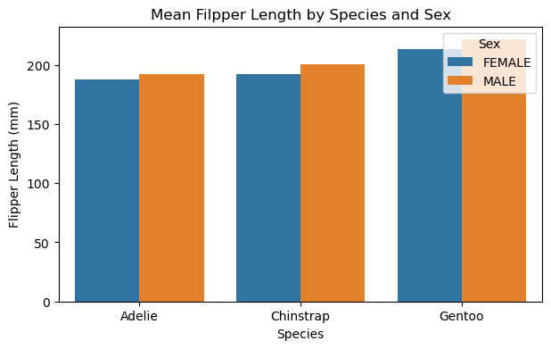
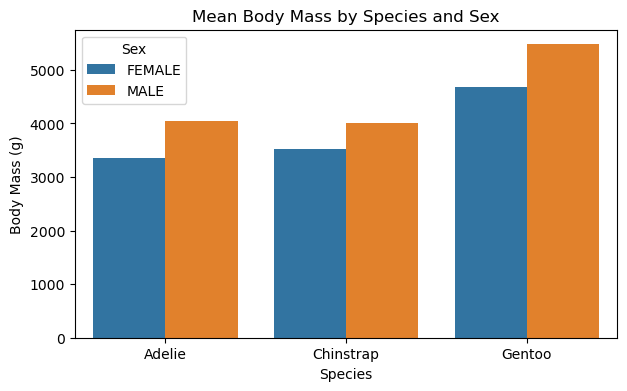
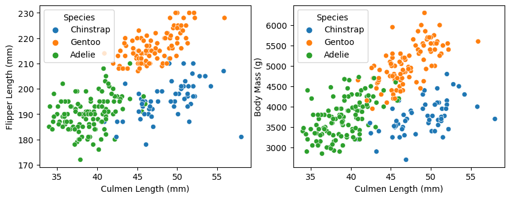
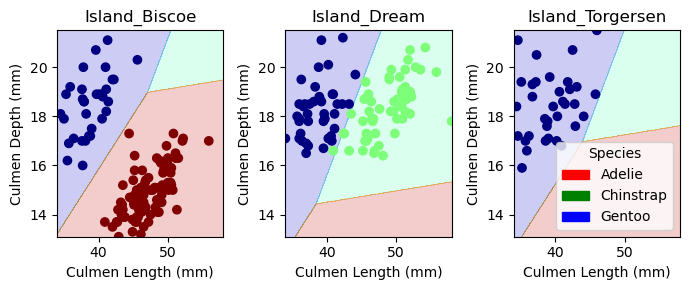
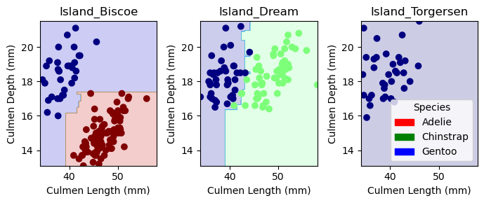

In this post, we will be using the Palmer Penguins data set collected by Dr. Kristen Gorman and the Palmer Station, Antarctica LTER, a member of the Long Term Ecological Research Network. It was first published by Gorman, Williams, and Fraser (2014) and was nicely packaged and released for use in the data science community by Horst, Hill, and Gorman (2020). The data contains physiological measurements for a number of individuals from each of three species of penguin. The goal of this post is to investigate different machine learning models’ performance to classify penguins’ species based on penguins’ quantitative and qualitative features.
First, we access the training data
import pandas as pdimport numpy as npimport warningswarnings.filterwarnings("ignore")# load datasettrain_url ="https://raw.githubusercontent.com/PhilChodrow/ml-notes/main/data/palmer-penguins/train.csv"train = pd.read_csv(train_url)train.shape
(275, 17)
Data Preparation
from sklearn.preprocessing import LabelEncoderle = LabelEncoder()le.fit(train["Species"])# function to prepare X and y. def prepare_data(df): df = df.drop(["studyName", "Sample Number", "Individual ID", "Date Egg", "Comments", "Region"], axis =1) df = df[df["Sex"] !="."] df = df.dropna() y = le.transform(df["Species"]) df = df.drop(["Species"], axis =1) df = pd.get_dummies(df)return df, yX_train, y_train = prepare_data(train)
# get the one vocab name for the species. train["Species"] = train["Species"].str.split().str.get(0)train
studyName
Sample Number
Species
Region
Island
Stage
Individual ID
Clutch Completion
Date Egg
Culmen Length (mm)
Culmen Depth (mm)
Flipper Length (mm)
Body Mass (g)
Sex
Delta 15 N (o/oo)
Delta 13 C (o/oo)
Comments
0
PAL0809
31
Chinstrap
Anvers
Dream
Adult, 1 Egg Stage
N63A1
Yes
11/24/08
40.9
16.6
187.0
3200.0
FEMALE
9.08458
-24.54903
NaN
1
PAL0809
41
Chinstrap
Anvers
Dream
Adult, 1 Egg Stage
N74A1
Yes
11/24/08
49.0
19.5
210.0
3950.0
MALE
9.53262
-24.66867
NaN
2
PAL0708
4
Gentoo
Anvers
Biscoe
Adult, 1 Egg Stage
N32A2
Yes
11/27/07
50.0
15.2
218.0
5700.0
MALE
8.25540
-25.40075
NaN
3
PAL0708
15
Gentoo
Anvers
Biscoe
Adult, 1 Egg Stage
N38A1
Yes
12/3/07
45.8
14.6
210.0
4200.0
FEMALE
7.79958
-25.62618
NaN
4
PAL0809
34
Chinstrap
Anvers
Dream
Adult, 1 Egg Stage
N65A2
Yes
11/24/08
51.0
18.8
203.0
4100.0
MALE
9.23196
-24.17282
NaN
...
...
...
...
...
...
...
...
...
...
...
...
...
...
...
...
...
...
270
PAL0910
100
Gentoo
Anvers
Biscoe
Adult, 1 Egg Stage
N21A2
Yes
11/18/09
51.1
16.5
225.0
5250.0
MALE
8.20660
-26.36863
NaN
271
PAL0809
69
Adelie
Anvers
Torgersen
Adult, 1 Egg Stage
N32A1
No
11/11/08
35.9
16.6
190.0
3050.0
FEMALE
8.47781
-26.07821
Nest never observed with full clutch.
272
PAL0708
33
Adelie
Anvers
Dream
Adult, 1 Egg Stage
N22A1
Yes
11/9/07
39.5
17.8
188.0
3300.0
FEMALE
9.66523
-25.06020
NaN
273
PAL0708
5
Adelie
Anvers
Torgersen
Adult, 1 Egg Stage
N3A1
Yes
11/16/07
36.7
19.3
193.0
3450.0
FEMALE
8.76651
-25.32426
NaN
274
PAL0708
21
Chinstrap
Anvers
Dream
Adult, 1 Egg Stage
N73A1
Yes
12/3/07
42.4
17.3
181.0
3600.0
FEMALE
9.35138
-24.68790
NaN
275 rows × 17 columns
Data Exploration and Visualization
Quantitative Feature Exploration
We want to understand how different species and sexs of penguins have different physical characteristics. After some primary data exploration of the dataset, we find that there is one incidence of Gentoo penguin whose sex is unknown. I decided to drop that row.
train = train[train['Sex'] !="."]
During the lecture, we have seen the scatterplot between Culmen Depth (mm) and Culmen Length (mm). I want to investigate the other two quantitative features included in the dataset which are Flipper Length (mm) and Body Mass (g). I will find the mean values of the flipper length and body mass for sexes of each penguin species.
# group by species and sex and find the mean flipper length. mean_flipper = train.groupby(["Species", "Sex"])["Flipper Length (mm)"].mean().reset_index()print(mean_flipper)
Species Sex Flipper Length (mm)
0 Adelie FEMALE 187.924528
1 Adelie MALE 192.327869
2 Chinstrap FEMALE 192.064516
3 Chinstrap MALE 200.692308
4 Gentoo FEMALE 212.836735
5 Gentoo MALE 221.204545
import seaborn as snsimport matplotlib.pyplot as plt#plot species vs flipper lengthplt.figure(figsize=(7, 4))sns.barplot(data=mean_flipper, x ="Species", y ="Flipper Length (mm)", hue="Sex")plt.title("Mean Filpper Length by Species and Sex")
Text(0.5, 1.0, 'Mean Filpper Length by Species and Sex')

# group by species and sex and find the mean body mass. mean_mass = train.groupby(["Species", "Sex"])["Body Mass (g)"].mean().reset_index()print(mean_mass)
Species Sex Body Mass (g)
0 Adelie FEMALE 3350.471698
1 Adelie MALE 4052.868852
2 Chinstrap FEMALE 3523.387097
3 Chinstrap MALE 4005.769231
4 Gentoo FEMALE 4684.693878
5 Gentoo MALE 5476.704545
# plot mean body mass by species and sexplt.figure(figsize=(7, 4))sns.barplot(data=mean_mass, x ="Species", y ="Body Mass (g)", hue="Sex")plt.title("Mean Body Mass by Species and Sex")
Text(0.5, 1.0, 'Mean Body Mass by Species and Sex')

From these two barplot, we can see that compare to Flipper Length (mm), the difference of mean Body Mass (g) between species seems to be more significant, if we don’t concern the scales and units of the two measures. Both sexes of Gentoo have obviously larger average weight than the other two penguin species.
Next, I construct two scatterplots: Flipper Length vs. Culmen Length and Body Mass vs. Culmen Length. It would be ideal to see the dots of each penguin species clustering in a region, and that region does not contain other species.
# plott scatter plot of the species in different variables. fig, ax = plt.subplots(1, 2, figsize = (10, 3.5))p1 = sns.scatterplot(train, x ="Culmen Length (mm)", y ="Flipper Length (mm)", hue ="Species", ax = ax[0])p2 = sns.scatterplot(train, x ="Culmen Length (mm)", y ="Body Mass (g)", hue ="Species", ax = ax[1])

From the scatterplots above, it seems that both Flipper Length (mm) and Body Mass (g) are good at differentiating Gentoo from the other two species.
Qualitative Feature Exploration
Here I want to explore how Island and Clutch Completion could help us in differentiating between penguin species.
# count how many recorded individuals are on each islandisland_species = train.groupby(["Island", "Species"]).size().reset_index(name='count')island_species
Island
Species
count
0
Biscoe
Adelie
33
1
Biscoe
Gentoo
97
2
Dream
Adelie
45
3
Dream
Chinstrap
57
4
Torgersen
Adelie
42
This table shows that Gentoo is only populated in Biscoe Island and Chinstrap is populated in Dream Island. Adelie is populated in the three islands. Therefore, Island is a good qualitative feature to distinguish between Gentoo and Chinstrap Island.
# count clutch for different speciesclutch_species = train.groupby(["Clutch Completion", "Species"]).size().reset_index(name ='count')clutch_species
Clutch Completion
Species
count
0
No
Adelie
12
1
No
Chinstrap
10
2
No
Gentoo
8
3
Yes
Adelie
108
4
Yes
Chinstrap
47
5
Yes
Gentoo
89
From the table above, we cannot see a very clear distinction between penguin species and their clutch completion status. Therefore, we are not using this feature as part of our feature combination.
Choosing Features by Logistic Regression
from itertools import combinationsfrom sklearn.linear_model import LogisticRegressionfrom sklearn.model_selection import cross_val_scoreLR = LogisticRegression()# these are not actually all the columns: you'll # need to add any of the other ones you want to search forall_qual_cols = ["Island"]all_quant_cols = ['Culmen Length (mm)', 'Culmen Depth (mm)', 'Flipper Length (mm)', 'Body Mass (g)']# initialize best score and best features. best_score =0best_features = []# loop through combinations of columns to find the best one. for qual in all_qual_cols: qual_cols = [col for col in X_train.columns if qual in col ]for pair in combinations(all_quant_cols, 2): cols = qual_cols +list(pair) LR.fit(X_train[cols], y_train) cv_scores_LR = cross_val_score(LR, X_train[cols], y_train, cv =5).mean()# select the combination that has the best score. if cv_scores_LR > best_score: best_score = cv_scores_LR best_columns = colsprint("Best columns:", best_columns)print("Best score:", best_score)
Best columns: ['Island_Biscoe', 'Island_Dream', 'Island_Torgersen', 'Culmen Length (mm)', 'Culmen Depth (mm)']
Best score: 0.9922322775263952
The best features for the logistic regression model are Island, Culmen Length (mm), and Culmen Depth (mm). It means that only using this combination of features could easily help us differentiate between penguin species.
Model Choices
We used Logistic Regression to choose the feature combination. We will use that combination for our model selection. First, here is the accuracy of Logistic Regression, which we have shown above.
# fit logistic regression to training dataLR.fit(X_train[best_columns], y_train)cv_scores_LR = cross_val_score(LR, X_train[best_columns], y_train, cv =5).mean()cv_scores_LR
0.9922322775263952
We have several other models to choose from. These models are Decision Trees, Random Forest, and SVC. We first import these models from sklearn. Let’s build these models and see their performance on the training data themselves. Similar to the section above, we would employ cross-validation and calculate the mean accuracy to evaluate the performance of the model.
from sklearn.tree import DecisionTreeClassifierfrom sklearn.ensemble import RandomForestClassifierfrom sklearn.svm import SVC
Decision Tree
# initialize decison tree classifierDT = DecisionTreeClassifier(max_depth=5, random_state=30)# fit decision tree classifier to training data. DT.fit(X_train[best_columns], y_train)cv_Scores_DT = cross_val_score(DT, X_train[best_columns], y_train, cv =5).mean()cv_Scores_DT
0.9687028657616892
Random Forest
# initialize random forestRF = RandomForestClassifier(max_depth=5, n_estimators=10, max_features=1, random_state=42)# fit the model to training dataRF.fit(X_train[best_columns], y_train)cv_Scores_RF = cross_val_score(RF, X_train[best_columns], y_train, cv =5).mean()cv_Scores_RF
0.9883107088989442
Support Vector Machine
# generate gamma values using logspace. gamma_values = np.logspace(-3, 2, num=6)print(gamma_values)# loop over different gamma values and find the one that gives us th best resultfor gma in gamma_values: svc = SVC(gamma=gma, C=1, random_state=42) svc.fit(X_train[best_columns], y_train) cv_Scores_SVC = cross_val_score(svc, X_train[best_columns], y_train, cv =5).mean()print(cv_Scores_SVC)
I will choose gamma = 0.1 as the parameter for the SVC model.
Testing
test_url ="https://raw.githubusercontent.com/PhilChodrow/ml-notes/main/data/palmer-penguins/test.csv"test = pd.read_csv(test_url)# separate variables. X_test, y_test = prepare_data(test)# test scores for different models. LR_test_score = LR.score(X_test[best_columns], y_test)DT_test_score = DT.score(X_test[best_columns], y_test)RF_test_score = RF.score(X_test[best_columns], y_test)# support vector machine and its test scoresvc = SVC(gamma=0.1, C=1, random_state=42)svc.fit(X_train[best_columns], y_train)SVC_test_score = svc.score(X_test[best_columns], y_test)print("Logistic Regression Score:", LR_test_score)print("Decision Tree Score:", DT_test_score)print("Random Forest Score:", RF_test_score)print("SVC Score:", SVC_test_score)
Logistic Regression Score: 1.0
Decision Tree Score: 0.9852941176470589
Random Forest Score: 1.0
SVC Score: 0.9852941176470589
Our testig results show that logiistic regression model and random forest model both give us 100% accuracy for the testing data!
Plotting Decision Regions
# Since my best columns' first three elements are qualitative. I modified the function. from matplotlib.patches import Patch# function to plot decision regions. def plot_regions(model, X, y): x0 = X[X.columns[3]] x1 = X[X.columns[4]] qual_features = X.columns[0:3] fig, axarr = plt.subplots(1, len(qual_features), figsize = (7, 3))# create a grid grid_x = np.linspace(x0.min(),x0.max(),501) grid_y = np.linspace(x1.min(),x1.max(),501) xx, yy = np.meshgrid(grid_x, grid_y) XX = xx.ravel() YY = yy.ravel()for i inrange(len(qual_features)): XY = pd.DataFrame({ X.columns[3] : XX, X.columns[4] : YY })for j in qual_features: XY[j] =0 XY[qual_features[i]] =1 XY = XY[X.columns] p = model.predict(XY) p = p.reshape(xx.shape)# use contour plot to visualize the predictions axarr[i].contourf(xx, yy, p, cmap ="jet", alpha =0.2, vmin =0, vmax =2) ix = X[qual_features[i]] ==1# plot the data axarr[i].scatter(x0[ix], x1[ix], c = y[ix], cmap ="jet", vmin =0, vmax =2) axarr[i].set(xlabel = X.columns[3], ylabel = X.columns[4], title = qual_features[i]) patches = []for color, spec inzip(["red", "green", "blue"], ["Adelie", "Chinstrap", "Gentoo"]): patches.append(Patch(color = color, label = spec)) plt.legend(title ="Species", handles = patches, loc ="best") plt.tight_layout()
Here is the decision regions of Logistic Regression Model, which gave us 100% accuracy rate.
plot_regions(LR, X_train[best_columns], y_train)

Here is the decision regions of Random Forest Model, which gave us 100% accuracy rate.
plot_regions(RF, X_train[best_columns], y_train)

It is noticeable that the decision regions for Chinstrap and Adelie penguins got more restrictive and small. Only regions that are very close to the training data are included as the decision region for these two species. The boundary of the region got more cursive than it was when \(\mathbf{gamma} = 0.1\)
Confusion Matrix
Confusion Matrix for Logistic Regression
from sklearn.metrics import confusion_matrixy_test_pred_LR = LR.predict(X_test[best_columns])LR_C = confusion_matrix(y_test, y_test_pred_LR)LR_C
for i inrange(3):for j inrange(3):print(f"There were {DT_C[i,j]}{le.classes_[i]} penguin(s) who were classified as {le.classes_[j]}.")
There were 30 Adelie Penguin (Pygoscelis adeliae) penguin(s) who were classified as Adelie Penguin (Pygoscelis adeliae).
There were 0 Adelie Penguin (Pygoscelis adeliae) penguin(s) who were classified as Chinstrap penguin (Pygoscelis antarctica).
There were 1 Adelie Penguin (Pygoscelis adeliae) penguin(s) who were classified as Gentoo penguin (Pygoscelis papua).
There were 0 Chinstrap penguin (Pygoscelis antarctica) penguin(s) who were classified as Adelie Penguin (Pygoscelis adeliae).
There were 11 Chinstrap penguin (Pygoscelis antarctica) penguin(s) who were classified as Chinstrap penguin (Pygoscelis antarctica).
There were 0 Chinstrap penguin (Pygoscelis antarctica) penguin(s) who were classified as Gentoo penguin (Pygoscelis papua).
There were 0 Gentoo penguin (Pygoscelis papua) penguin(s) who were classified as Adelie Penguin (Pygoscelis adeliae).
There were 0 Gentoo penguin (Pygoscelis papua) penguin(s) who were classified as Chinstrap penguin (Pygoscelis antarctica).
There were 26 Gentoo penguin (Pygoscelis papua) penguin(s) who were classified as Gentoo penguin (Pygoscelis papua).
One Adelie Penguin is misidentified as a Gentoo Penguin by the Decision Trees Model.
for i inrange(3):for j inrange(3):print(f"There were {svc_C[i,j]}{le.classes_[i]} penguin(s) who were classified as {le.classes_[j]}.")
There were 31 Adelie Penguin (Pygoscelis adeliae) penguin(s) who were classified as Adelie Penguin (Pygoscelis adeliae).
There were 0 Adelie Penguin (Pygoscelis adeliae) penguin(s) who were classified as Chinstrap penguin (Pygoscelis antarctica).
There were 0 Adelie Penguin (Pygoscelis adeliae) penguin(s) who were classified as Gentoo penguin (Pygoscelis papua).
There were 0 Chinstrap penguin (Pygoscelis antarctica) penguin(s) who were classified as Adelie Penguin (Pygoscelis adeliae).
There were 11 Chinstrap penguin (Pygoscelis antarctica) penguin(s) who were classified as Chinstrap penguin (Pygoscelis antarctica).
There were 0 Chinstrap penguin (Pygoscelis antarctica) penguin(s) who were classified as Gentoo penguin (Pygoscelis papua).
There were 0 Gentoo penguin (Pygoscelis papua) penguin(s) who were classified as Adelie Penguin (Pygoscelis adeliae).
There were 1 Gentoo penguin (Pygoscelis papua) penguin(s) who were classified as Chinstrap penguin (Pygoscelis antarctica).
There were 25 Gentoo penguin (Pygoscelis papua) penguin(s) who were classified as Gentoo penguin (Pygoscelis papua).
One Gentoo penguin is misidentified as a Chinstrap penguin by the SVC model.
Discussion
In this post, I made some further investigation of the Penguin Dataset and tried out different machine learning models for classification. I selected the three features for classification using some preliminary data exploration and testing iterations of feature combinations on the Logistic Regression model to find the combination that gives me the best accuracy in the model. Then I tested Decision Tree, Random Forest, and Support Vector Machine models using the cross-validation on the training data and plotted their decision regions. At the final testing step, I used all these models and found that Logistic Regression and Random Forest models both give me a 100% accuracy.
When choosing the parameters at the modeling building step, I ran into risk of overfitting my model, even though a large portion of the risk is avoided by cross-validation. For example, when selecting the gamma value, I chose the gamma that gives me the best result in the training data.
It is very interesting to see the decision regions of different models. The shapes of the regions reflect how different models work and classify the data. The boundaries of the tree models’ decision regions are parallel to the axis, while the logistic regression and support vector machine has linear and non-linear lines to seperate different decision regions. Also, when \(\mathbf{gamma}\) gets larger, the model becomes more prudent in drawing decision regions for two penguin species, risking of overfitting the model.